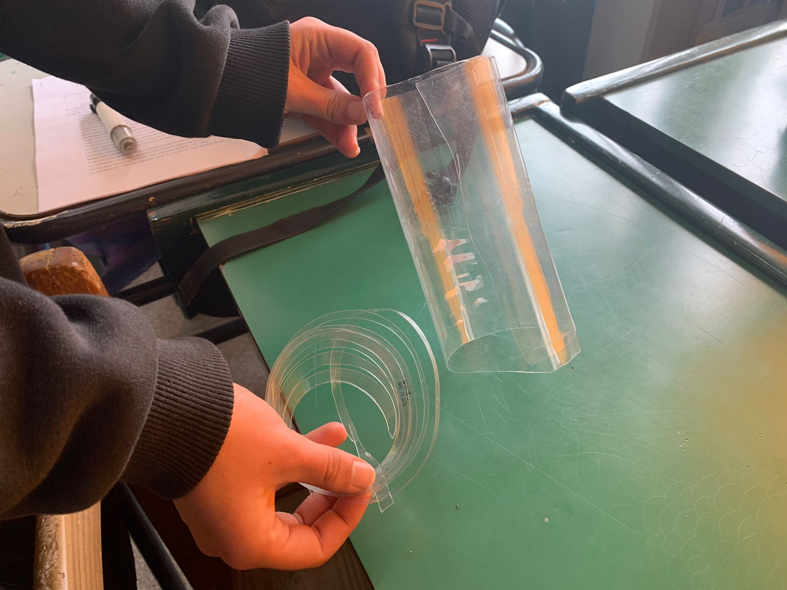
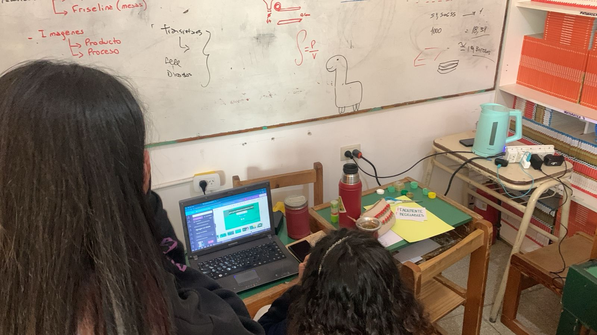
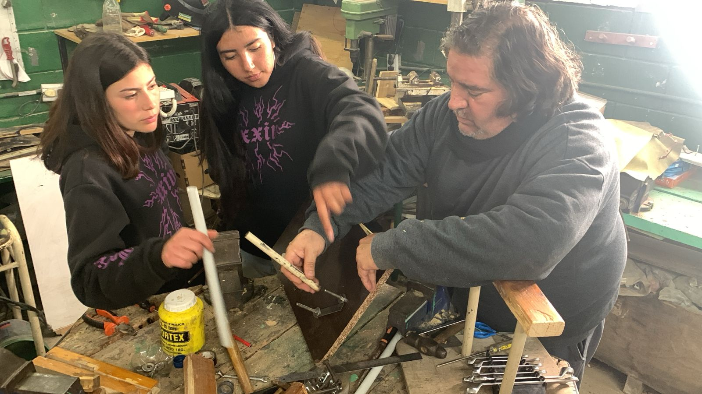
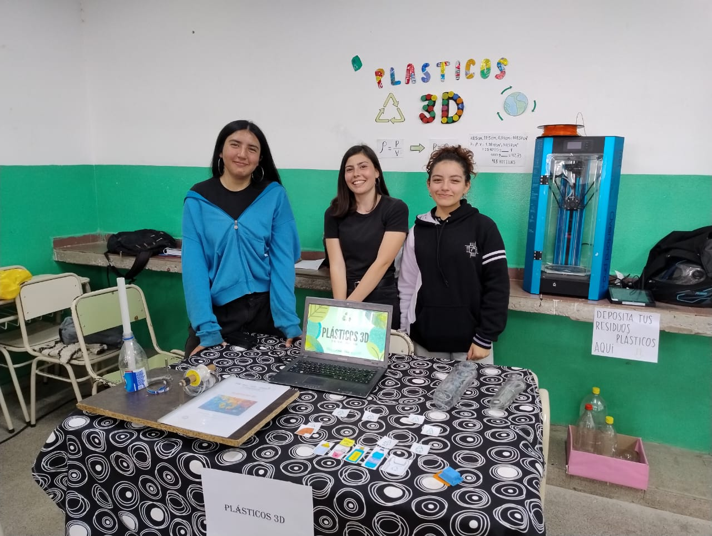
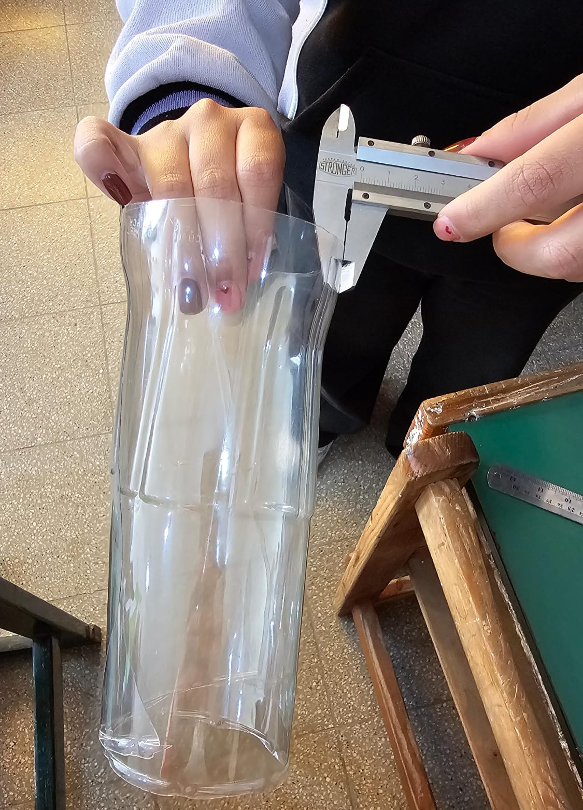

Este proyecto comenzó con el objetivo de reciclar plástico de forma consciente, transformando residuos en un filamento para impresoras 3D. Se realizaron pruebas con distintos materiales, se experimentó con procesos de fusión y extrusión, y se presentó un informe para toda la comunidad educativa mostrando el valor del reciclaje aplicado a la tecnología.




